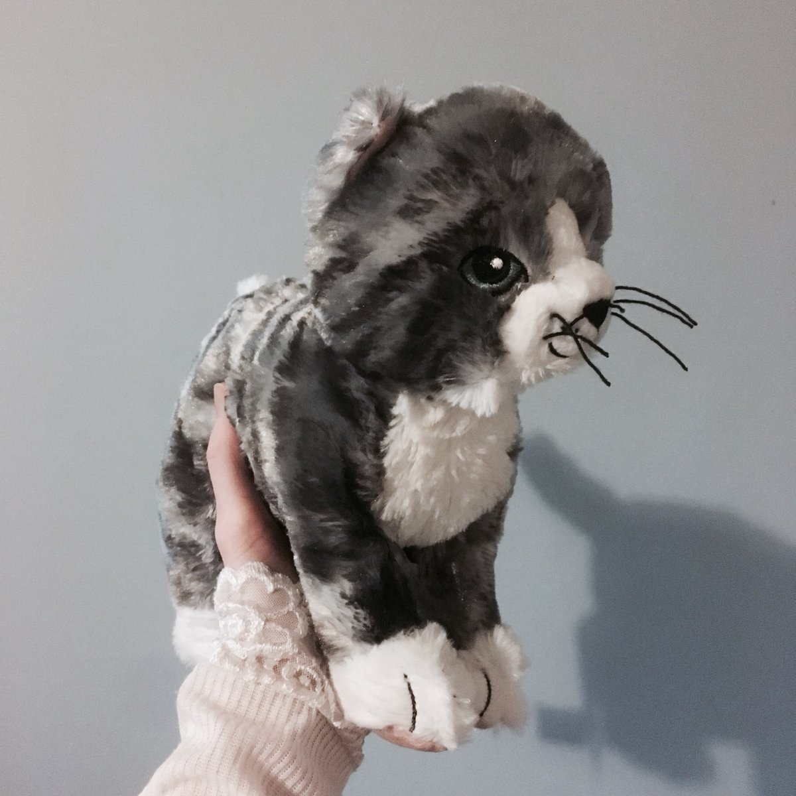
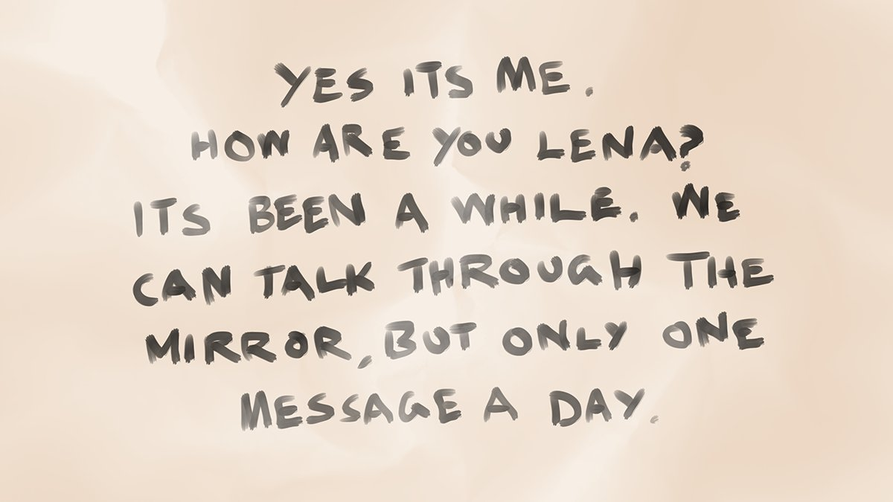
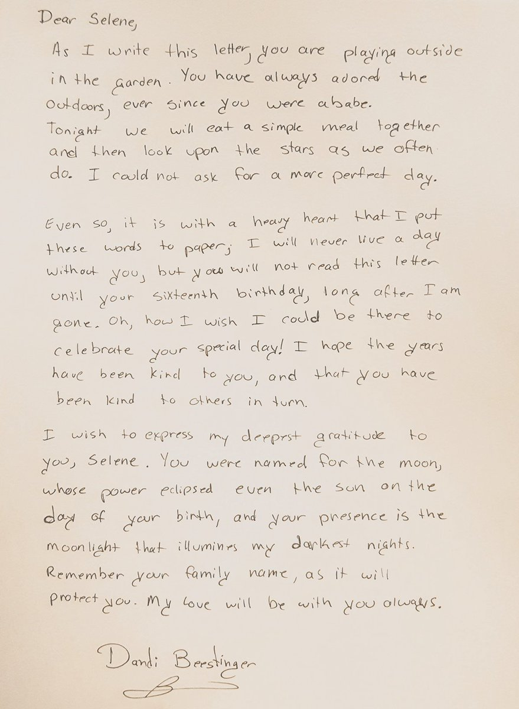

I keep thinking about that voice. It was definitely in my head but it sounded just like Nene and it was talking to me.
2 Likes, 0 Shares
26th of Flamerule, 1494 DR 8:47 PM

I keep thinking about that voice. It was definitely in my head but it sounded just like Nene and it was talking to me.
2 Likes, 0 Shares
26th of Flamerule, 1494 DR 8:47 PM
@JClark_DM replied…
Replying to @JClark_DM
OK I tried but nothing happened. Do you think I should do something with a mirror? The voice mentioned a mirror.
2 Likes, 0 Shares
26th of Flamerule, 1494 DR 9:56 PM
@JClark_DM replied…
Replying to @JClark_DM
I’m confused. I think it’s Nene but what if it’s something or someone else? What if I’m imagining it? Why would Nene even be in my head talking anyway?
1 Like, 0 Shares
26th of Flamerule, 1494 DR 11:50 PM
I heard Nene’s voice and it said “Use the mirror if you wish to talk to me, Lena. That’s why I gave it to you.” Lena is the name that Nene gave me. What should I do?
2 Likes, 0 Shares
26th of Flamerule, 1494 DR 11:00 PM
The Trade Way was never this confusing.
2 Likes, 0 Shares
27th of Flamerule, 1494 DR 3:36 PM
Only a few more sleeps until Midsummer.
2 Likes, 0 Shares
27th of Flamerule, 1494 DR 5:48 PM
Talk into the mirror. OK. I can do this. I am brave and also very tall.
2 Likes, 0 Shares
27th of Flamerule, 1494 DR 10:33 PM
Replying to @SulkieB
Nothing happened…
1 Like, 0 Shares
27th of Flamerule, 1494 DR 10:36 PM
Oh wait. Do you think the voice meant the mirror that Nene gave to me? I’d better try talking into that.
1 Like, 0 Shares
27th of Flamerule, 1494 DR 10:41 PM
Replying to @SulkieB
I know I left it somewhere in the room. I just need to check the drawers. Except the third one.
1 Like, 0 Shares
27th of Flamerule, 1494 DR 10:44 PM
Replying to @SulkieB
Here it is. OK. Let’s try this.
1 Like, 0 Shares
27th of Flamerule, 1494 DR 10:45 PM
Um, hello. I heard a voice and it sounded like Nene.
Are you Nene?
Wow! That definitely did something. The mirror glowed for a moment when I finished speaking.
2 Likes, 0 Shares
27th of Flamerule, 1494 DR 10:46 PM
Yes, it’s me. How are you, Lena? It’s been a while.
We can talk through the mirror, but only one message a day.
Replying to @SulkieB
The mirror made a chime! Now there are words inside the mirror!
3 Likes, 0 Shares
27th of Flamerule, 1494 DR 10:49 PM
Replying to @SulkieB
I can’t read it. 😖 There’s a lot of words and I’m not that good at reading yet. The mirror can’t speak like little bird. 😧😧😧
3 Likes, 0 Shares
27th of Flamerule, 1494 DR 10:58 PM
Replying to @SulkieB
Ah! This is so dumb! Nene might be talking to me but I can’t understand it! 😭
3 Likes, 0 Shares
27th of Flamerule, 1494 DR 10:59 PM
Help! Nene might be trying to talk but I can’t read the words in the mirror! What do I do?!
1 Like, 0 Shares
27th of Flamerule, 1494 DR 11:02 PM
@kthexsis sent a message…
Replying to @kthexsis
She might know some Luiric but surely she wouldn’t write in it? I tried sounding out the words in the mirror and I think they’re in Common, I just didn’t get very far because I’m not that good yet.
0 Likes, 0 Shares
28th of Flamerule, 1494 DR 8:42 AM
@kthexsis replied…
Replying to @kthexsis
I want help. How will you help?
1 Like, 0 Shares
28th of Flamerule, 1494 DR 8:48 AM
@kthexsis replied…
Replying to @kthexsis
That would be great but aren’t you really far away?
1 Like, 0 Shares
28th of Flamerule, 1494 DR 8:58 AM
@kthexsis replied…
Replying to @kthexsis
But how do I show you the mirror?
1 Like, 0 Shares
28th of Flamerule, 1494 DR 9:02 AM
@kthexsis replied…
Replying to @kthexsis
Oh yeah, that’s one of the choices I put in my question isn’t it. OK Thexy if I write the words down I will ask you to help read them is that good?
2 Likes, 0 Shares
28th of Flamerule, 1494 DR 9:07 AM
@kthexsis replied…
Posted by @Slewingtons
I bought one Breadstick.
8 Likes, 0 Shares
28th of Flamerule, 1494 DR 3:08 PM
Replying to @Slewingtons
Pfft, that doesn’t look like Breadstick at all. 🙄 It’s not grumpy enough.
3 Likes, 0 Shares
28th of Flamerule, 1494 DR 3:16 PM
This is good. Two choices were picked so I will do both. I will write the words down and also ask the mirror for advice.
2 Likes, 0 Shares
28th of Flamerule, 1494 DR 10:32 PM
OK this is the words in the mirror. @kthexsis do you know what they mean? I recognise some of them, but I can’t read the whole thing.
2 Likes, 0 Shares
28th of Flamerule, 1494 DR 10:45 PM
@kthexsis replied…
Replying to @kthexsis
Yes. Renee is very special. Thank you Thexy for explaining the message. I can’t explain how I feel.
1 Like, 0 Shares
28th of Flamerule, 1494 DR 11:52 PM
@kthexsis replied…
I am having trouble reading the words in the mirror but my friends will help me.
I also said a message into the mirror. I said I am having trouble reading the words but my friends are helping me.
3 Likes, 0 Shares
28th of Flamerule, 1494 DR 10:47 PM
Can you read the message I saw in the mirror? Do you think it’s really from Nene and is it good?
1 Like, 0 Shares
28th of Flamerule, 1494 DR 11:01 PM
Replying to @SulkieB
Thexy says the message is from Nene and is good, so you don’t have to answer this question but you can if you want to. 🙂
2 Likes, 0 Shares
28th of Flamerule, 1494 DR 11:55 PM
I don’t know this feeling but it isn’t bad.
3 Likes, 0 Shares
28th of Flamerule, 1494 DR 11:56 PM
I’m sorry, I didn’t know you had trouble reading.
I will make the messages shorter.
I got another magic voice message from Nene this morning. She said she’s sorry about the mirror messages being in text and she’ll make them shorter to help me.
3 Likes, 0 Shares
29th of Flamerule, 1494 DR 2:30 PM
Breadstick I give you food that I pay for with my own money. Please do not eat mine.
3 Likes, 0 Shares
29th of Flamerule, 1494 DR 6:41 PM
I’m glad to talk to you again, Nene.
I hope I can see you soon.
OK I sent another mirror message to Nene. I said I’m glad to talk to her again and I hope I can see her soon.
2 Likes, 0 Shares
29th of Flamerule, 1494 DR 10:23 PM
I have work so not yet.
But we can talk.
She just sent a message back! I read it all by myself because the words are short! 😊 She says she has work so not yet but we can talk.
2 Likes, 0 Shares
29th of Flamerule, 1494 DR 10:36 PM
Thank you everyone for making a choice in my last question even though you didn’t need to. It makes me happy that you want to help me.
2 Likes, 0 Shares
29th of Flamerule, 1494 DR 10:38 PM
I got a feeling in the middle of my body when I got a message from Nene. It kind of hurt but not in a bad way. What is it?
2 Likes, 0 Shares
29th of Flamerule, 1494 DR 11:25 PM
Who else is excited for the Midsummer festival?
5 Likes, 0 Shares
30th of Flamerule, 1494 DR 1:47 PM
I finished my shift early so now I can think about what my next message to Nene will be.
4 Likes, 0 Shares
30th of Flamerule, 1494 DR 4:24 PM
Nene, I have a cat called Breadstick who is soft.
Do you like cats? What is your job?
I sent a message to Nene telling her about Breadstick and also I asked her what her job is.
2 Likes, 0 Shares
30th of Flamerule, 1494 DR 9:44 PM
I like cats. Breadstick is a good name.
I detect magic spells.
Replying to @SulkieB
She replied! She says she likes cats. 🙂
1 Like, 0 Shares
30th of Flamerule, 1494 DR 9:48 PM
Replying to @SulkieB
I think the next bit is about Breadstick. I just need to check the words.
1 Like, 0 Shares
30th of Flamerule, 1494 DR 9:49 PM
Replying to @SulkieB
OK she says Breadstick is a good name and her job is detecting magic spells.
2 Likes, 0 Shares
30th of Flamerule, 1494 DR 9:51 PM
The feeling inside me is something else, but what is it? Is it good or bad? Will you tell me?
2 Likes, 0 Shares
30th of Flamerule, 1494 DR 10:32 PM
@kthexsis replied…
Replying to @kthexsis
I’ll try. It’s in the middle of my body just above my tummy, in the front and back. It’s sort of sharp and almost feels like it hurts, but it’s not a bad hurt which is weird. Sometimes it’s really strong and I have to hold myself. It comes very suddenly.
1 Like, 0 Shares
30th of Flamerule, 1494 DR 11:12 PM
@kthexsis replied…
Replying to @kthexsis
I haven’t heard that expression before. This feeling feels stronger than what a butterfly could do. It’s like being hit with something.
1 Like, 0 Shares
Midsummer, 1494 DR 1:22 AM
@kthexsis replied…
How excited are you for Midsummer?
2 Likes, 0 Shares
30th of Flamerule, 1494 DR 11:00 PM
Replying to @SulkieB
There’s lots of music and dancing during the festivals. It’s great cover for sneaking around. The feasting is good too, but I don’t drink like some people I know.
2 Likes, 0 Shares
30th of Flamerule, 1494 DR 11:28 PM
Hey @RogueMostLikely I put five extra silver on your table to cover the last few days. I will increase my rent to two gold starting next tenday.
3 Likes, 0 Shares
30th of Flamerule, 1494 DR 11:16 PM
Happy Midsummer festival!
Thank you, Lena.
Happy Midsummer festival everyone! I’m having a great time. I bought a pie and a drink, listened to some music, and played a game where you have to throw rocks at bottles. I won a dolly. 😀
3 Likes, 0 Shares
Midsummer, 1494 DR 12:38 PM
@JClark_DM replied…
Replying to @JClark_DM
OK I will eat sweets for you because you said so.
2 Likes, 0 Shares
Midsummer, 1494 DR 6:18 PM
@JClark_DM replied…
Lots of people were excited for Midsummer! I hope you all enjoyed it!
3 Likes, 0 Shares
Midsummer, 1494 DR 10:32 PM
What should I tell Nene about next?
1 Like, 0 Shares
Midsummer, 1494 DR 11:10 PM
New month, back to work. New schedule starts today.
4 Likes, 0 Shares
1st of Eleasis, 1494 DR 8:30 AM
Weird. Timmy gave me a letter this morning. He said it’s addressed to me, but it wasn’t supposed to be opened until three days before Midsummer. That was the day Thexy and I read the message from Nene.
4 Likes, 0 Shares
1st of Eleasis, 1494 DR 1:16 PM
Replying to @SulkieB
He said it’s extra weird because the letter doesn’t have an address on it. It’s just my name. My real name. He’s not sure how it even got here.
3 Likes, 0 Shares
1st of Eleasis, 1494 DR 1:18 PM
@Just_potatoe_ replied…
Replying to @Just_potatoe_
I’ll ask in my daily question. It did pass the Fleet Feet Safe Delivery Guarantee though.
0 Likes, 0 Shares
1st of Eleasis, 1494 DR 1:49 PM
OK I will tell Nene all about my job.
3 Likes, 0 Shares
1st of Eleasis, 1494 DR 10:56 PM
I got a job as a delivery girl. I take letters and packages to lots of places. I bring Breadstick with me.
Should I open the mysterious letter?
2 Likes, 0 Shares
1st of Eleasis, 1494 DR 11:00 PM
That is good. You have come a long way.
Nene sent a mirror message this morning. She said it’s good that I have a job and I’ve come a long way. I guess that’s true.
2 Likes, 0 Shares
2nd of Eleasis, 1494 DR 1:12 PM
Replying to @SulkieB
Things are so different now from before. When I first came to Waterdeep I was living on the street. I had to steal and fight just to stay alive.
2 Likes, 0 Shares
2nd of Eleasis, 1494 DR 1:12 PM
I am letting Breadstick examine the envelope now.
3 Likes, 0 Shares
2nd of Eleasis, 1494 DR 10:31 PM
Replying to @SulkieB
Breadstick is sniffing the envelope. Breadstick is not afraid of it.
3 Likes, 0 Shares
2nd of Eleasis, 1494 DR 10:33 PM
Replying to @SulkieB
Breadstick is now rolling on the envelope. I’ve never seen a cat so happy with a letter before. I’m going to open it.
3 Likes, 0 Shares
2nd of Eleasis, 1494 DR 10:35 PM
There’s a letter inside and it has so many words on it. There’s no way I can read this much. Maybe you can help me? This is what it looks like.
9 Likes, 1 Share
2nd of Eleasis, 1494 DR 10:37 PM
Is the letter a good letter?
1 Like, 0 Shares
2nd of Eleasis, 1494 DR 11:16 PM
@kthexsis replied…
Replying to @kthexsis
Dandi? Um, that’s my mama’s name. Is the letter about my mama?
2 Likes, 0 Shares
3rd of Eleasis, 1494 DR 8:20 AM
@kthexsis replied…
Replying to @kthexsis
What? Why? I don’t. What?
2 Likes, 0 Shares
3rd of Eleasis, 1494 DR 8:31 AM
@kthexsis replied…
Replying to @kthexsis
Um, OK. Can you help me, @RogueMostLikely ?
3 Likes, 0 Shares
3rd of Eleasis, 1494 DR 8:51 AM
@RogueMostLikely replied…
@kthexsis sent a message…
Replying to @kthexsis
😮
1 Like, 0 Shares
3rd of Eleasis, 1494 DR 9:17 AM
Replying to @kthexsis
I couldn’t find it but I didn’t know what I was looking for really.
2 Likes, 0 Shares
3rd of Eleasis, 1494 DR 9:43 AM
You said it’s a good letter, but I still don’t know how to feel about it.
4 Likes, 0 Shares
3rd of Eleasis, 1494 DR 10:43 PM
Replying to @SulkieB
I read it with J and Breadstick was also there. It’s a lot to think about.
3 Likes, 0 Shares
3rd of Eleasis, 1494 DR 10:45 PM
I’m sorry but I don’t have a question for today. I need to think about the letter some more. Maybe I’ll go up to the roof.
5 Likes, 0 Shares
3rd of Eleasis, 1494 DR 11:01 PM
Thank you, mama.
3 Likes, 0 Shares
4th of Eleasis, 1494 DR 6:13 PM